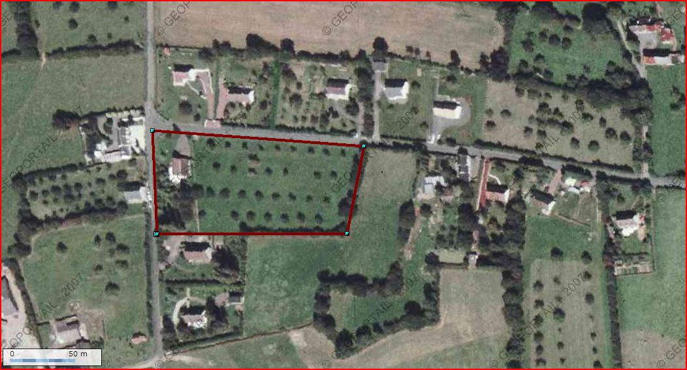

Ce
terrain de la Chasse au Rey, ou Cache au Rey est peut-être
cité dans un acte de 1662 dans Notices Mémoires et
Documents, t.12, 1894, Notes concernant la seigneurie du Mesnil-Viter,
p.76, Fief des Terrais, 3 juillet 1662- Fieffe, devant les tabellions
de Saint-Lô, par Pierre Lalouel, de Villiers, à Jean et Richard Surget, père et fils de La Meauffe, de 5 vergées (environ 60 ares) nommée la Cache, butte le chemin de Saint-Lo à Hyaumet, tenues de la seigneurie du Mesnil-Vitey, sous le fief des Terrais.